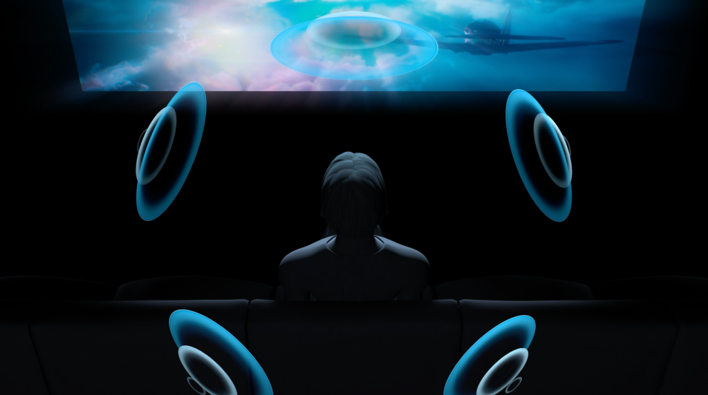
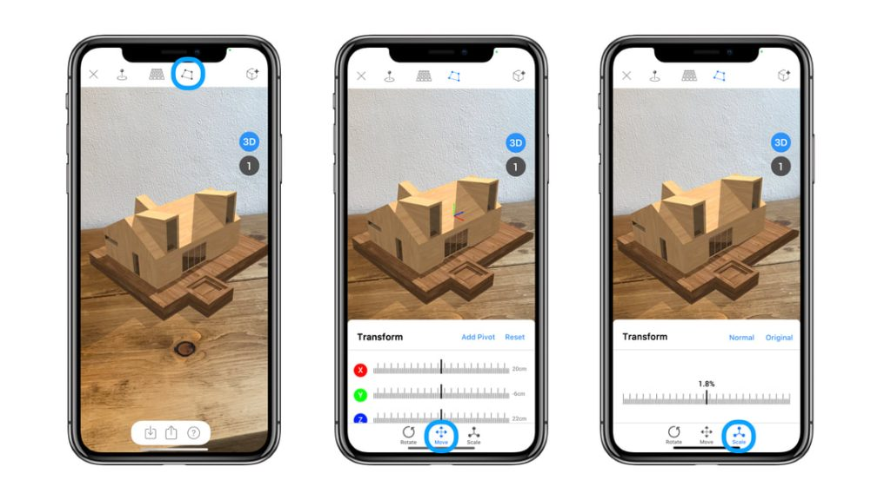

This week’s three readings have inspired my understanding of space and experience from different perspectives. Especially as a creator who is trying to use AR to recreate Winchester Cathedral, I have started to think about whether I am actually modeling a building or awakening a memory site.

Miller, C. (2020). spatial audio [Online image]. Available at: https://9to5mac.com/2020/09/14/airpods-spatial-audio-device-switching/ (Accessed: 26 March 2025)
I was deeply impressed by Norberg-Schulz’s proposition of “Genius Loci” (the spirit of place). He believed that the purpose of architecture is not merely to provide functionality, but to evoke people’s “sense of presence,” making them feel that they are in a unique and meaningful place. This has made me rethink how I design the sound and interaction in my AR church project. For example, regarding the sound sculpture in the church, although the audience cannot get close to it, I can create an experience of “being distant yet responsive” through AR. When the audience stands right in front of the sculpture, it can play a low chant through spatial sound effects, with the sound having a spatial echo as if it is coming from afar. If the audience stays for a longer time or slowly turns their body, the sound will also change slightly, as if it is “responding” to the presence of the audience, and this can be perceived even without getting close. This design does not aim for a “realistic” reproduction, but rather to evoke a sense of sacred and subtle interaction, making people feel that they are gently surrounded by the space. This kind of atmosphere is what I understand as “Genius Loci” it is not about replicating the physical structure of the building, but about awakening its spiritual essence with sound, rhythm, and spatial relationships.

The New York Times. (n.d.). Key Concepts in Spatial Audio [Online image]. Available at: https://rd.nytimes.com/projects/key-concepts-in-spatial-audio/ (Accessed: 26 March 2025)
Dourish’s “embodied interaction” has made me consider whether I have enabled users to “physically participate” in this place. For instance, if users are merely standing and observing, they are just spectators. However, if they can move around, reach out their hands, touch the walls, or even look down at the names on the floor, then this space is truly “connected” to them. I have been testing a new way of interaction when users enter the nave area of the church, the hidden music will gradually start playing with a faint echo only when they look up at the dome. This action is not just a technical trigger; it is more of a “transformation” of the physical posture, shifting from merely looking to gazing up, and from silence to listening.

DARF Design. (2021). Move, Scale and Rotate models accurately in AR [Online image]. Available at: https://www.darfdesign.com/arkitutorials/transform (Accessed: 26 March 2025)
And Benedikt has made me realize that I don’t have to be completely “faithful” to reality. Winchester Cathedral itself is a physical building, but I can do some things in the virtual space to “enhance the narrative.” For example, when users walk into the altar area, I can let them see the “historical transformation” of it, for instance, the walls crack open to reveal the construction process, or a building reverts from its current form back to a wooden model. These are things that cannot be seen in reality, but they can enhance the perception of the historical depth of this space. AR can be more than just a reproduction it can “reveal.”
Overall, this week has made me realize a very important point, AR/VR is not about replacing reality, but rather adding another layer of perception to it. I’m no longer just trying to “reconstruct a church”. Instead, I’m creating an “entrance that allows people to experience the church,” whether it’s visually, audibly, or physically. This has given me a deeper understanding and a clearer goal for my creative work.
Reading list
- Christian Norberg-Schulz – Genius Loci: Towards a Phenomenology of Architecture, Introduction + Chapter 1: Place
- Dourish, P. (2001). Where the Action Is: The Foundations of Embodied Interaction, Chapter 3: Embodied Interaction
- Benedikt, M. (1991). Cyberspace: First Steps, Chapter: Cyberspace: Some Proposals